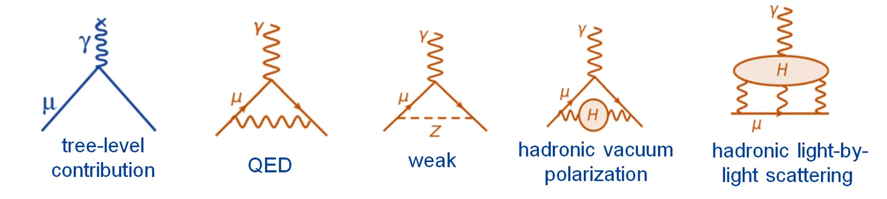

02/07About Muons缪子科普
Fundamental Muon Physics缪子基础物理
The muon is one of the sharpest tools we have for testing the laws of nature. We know its properties so precisely that even a tiny mismatch between measurement and theory would point to new particles or forces. This chapter covers the three big questions muon physicists ask: how strong is the muon's magnet, is its charge perfectly centred, and can it ever turn into an electron?
缪子是检验自然规律最锐利的工具之一。我们对它的性质了解得如此精确，以至于测量与理论之间哪怕极其微小的偏差，都可能指向新的粒子或相互作用。本章介绍缪子物理学家追问的三个大问题：缪子这枚“小磁针”有多强？它的电荷分布是否完全对称？它有没有可能直接变成电子？
The muon's magnet: g−2缪子的磁性：g−2
A spinning charge is a magnet旋转的电荷就是磁铁
The muon has spin and electric charge, so it behaves like a tiny bar magnet. The strength of that magnet is its magnetic moment, written μ = g (e/2m) S. The number g, the g-factor, tells us how much magnetism the muon carries for a given amount of spin. In 1928 Paul Dirac's relativistic quantum theory predicted that for a point-like particle such as the electron or muon, g should be exactly 2.
缪子带有自旋和电荷，因此表现得像一枚微小的条形磁铁，其强弱用磁矩 μ = g (e/2m) S 来描述。数值 g（朗德g因子）告诉我们：每单位自旋对应多少磁性。1928年，狄拉克的相对论量子理论预言：对于电子、缪子这样的点粒子，g 应恰好等于2。


Placed in a magnetic field, the muon's spin wobbles around the field direction like a spinning top — it precesses. The precession rate is set by g, so measuring how fast the spin turns is a way of measuring the muon's magnetism.
在磁场中，缪子的自旋会像陀螺一样绕磁场方向摆动，即“进动”。进动的快慢由 g 决定，因此测量自旋转动的速度，就能测出缪子的磁性。
Why g is not exactly 2为什么 g 不恰好等于2
Quantum physics says empty space is never truly empty. The muon is constantly surrounded by a fizz of virtual particles that pop in and out of existence — photons, electrons, W and Z bosons, quarks and gluons, the Higgs boson. Each one nudges the muon's magnetism very slightly. The total nudge is called the anomalous magnetic moment, aμ = (g−2)/2, and it is about 0.00116592 — a shift of roughly one part in a thousand.
量子物理告诉我们，真空从不真正“空”。缪子周围始终环绕着不断涌现又湮灭的虚粒子——光子、电子、W和Z玻色子、夸克与胶子、希格斯玻色子……每一种都会让缪子的磁性发生极其细微的改变。这些贡献的总和称为反常磁矩 aμ = (g−2)/2，约为0.00116592，即约千分之一的偏移。

Physicists draw these effects as Feynman diagrams with loops. The largest contribution comes from quantum electrodynamics (QED), first calculated by Julian Schwinger in 1948 as α/2π. Smaller pieces come from the weak force and from the strong force acting on virtual quarks — the “hadronic” contributions, which are the hardest part to calculate.
物理学家用带圈的费曼图来描述这些效应。最大的贡献来自量子电动力学（QED），施温格（Julian Schwinger）于1948年首次算出其主项 α/2π。较小的部分来自弱相互作用，以及强相互作用作用于虚夸克所产生的“强子贡献”——后者是理论计算中最困难的部分。


Here is why the muon matters more than the electron. The influence of a heavy, unknown particle on aμ grows with the square of the lepton's mass. The muon is 207 times heavier than the electron, so it is about 43,000 times more sensitive to such particles. If something new exists in the vacuum, the muon is far more likely to feel it.
这正是缪子比电子更重要的原因：未知重粒子对反常磁矩的影响与轻子质量的平方成正比。缪子比电子重207倍，因此对这类粒子的敏感度高出约43000倍。如果真空中存在新东西，缪子更有可能“感觉”到它。

How g−2 is measured如何测量 g−2
Spin-polarised muons are injected into a storage ring 14 metres across, with an extremely uniform 1.45-tesla magnetic field. As they circle, their spins turn slightly faster than their direction of motion; the difference, ωa, is directly proportional to aμ. Because a muon's decay positron is emitted preferentially along its spin, detectors around the ring see the number of high-energy positrons rise and fall — the famous “wiggle plot”. Meanwhile hundreds of NMR probes map the magnetic field to tens of parts per billion. Running at a “magic” momentum of 3.094 GeV/c cancels the effect of the focusing electric fields on the spin.
将自旋极化的缪子注入直径14米、磁场高度均匀（1.45特斯拉）的储存环。缪子回旋时，其自旋转动比运动方向转动稍快，二者之差 ωa 与 aμ 成正比。由于缪子衰变产生的正电子倾向于沿自旋方向发射，环周的探测器会看到高能正电子计数周期性起伏——这就是著名的“摆动图”。与此同时，数百个核磁共振探头以十亿分之几十的精度绘制磁场分布。选择3.094 GeV/c 的“魔数动量”，可以消除聚焦电场对自旋的影响。

Sixty years of measurement六十年的测量历程
- CERN (1959–1979): three generations of experiments established the storage-ring method and the magic momentum.
- CERN（1959—1979）：三代实验奠定了储存环方法与魔数动量技术。
- Brookhaven E821 (1997–2004): reached 0.54 parts per million and found a value higher than the Standard Model prediction of the time.
- 布鲁克海文 E821（1997—2004）：精度达百万分之0.54，所得数值高于当时的标准模型预言。
- Fermilab E989 (2017–2023 running): the same ring, moved 5,000 km by barge and road, published results in 2021, 2023 and its final result in 2025 — 127 parts per billion, the most precise measurement of its kind. Our group contributed to the analysis of the precession frequency and the beam-dynamics corrections.
- 费米实验室 E989（2017—2023年取数）：同一个储存环经水路和公路辗转5000公里运抵费米实验室，于2021、2023年发布结果，并于2025年发布最终结果——精度十亿分之127，是同类测量中最精确的。本课题组参与了进动频率分析和束流动力学修正。
- J-PARC E34 (in preparation): a completely different approach using ultra-cold, re-accelerated muons in a compact 66-cm ring without electric focusing — an independent check with different systematics.
- J-PARC E34（筹备中）：采用完全不同的方法：将超冷缪子再加速后注入直径66厘米的紧凑储存环，无需电场聚焦——系统误差完全不同的独立检验。
For two decades the measurement and the theory disagreed, raising hopes of new physics. Since 2020, new lattice-QCD calculations of the hadronic contribution have moved the prediction closer to experiment, while earlier data-driven estimates did not. Resolving that difference within the theory community is now as important as the measurement itself. Either way, the 127-ppb result places some of the strongest constraints on new particles that interact with muons.
二十年来，实验与理论之间的差异一直让人期待新物理。2020年以来，强子贡献的格点QCD新计算使理论预言向实验值靠拢，而此前基于实验数据的估算则并非如此。弄清这两种理论方法之间的分歧，如今与测量本身同样重要。无论结果如何，十亿分之127的精度都对与缪子相互作用的新粒子给出了最强的限制之一。
Our Muon g−2 research →我们的 Muon g−2 研究 → The 2025 final result →2025年最终结果 →
Is the muon perfectly round? The EDM缪子是“圆”的吗？电偶极矩
A tiny lopsidedness微小的“偏心”
An electric dipole moment (EDM) would mean the muon's charge is very slightly displaced along its spin axis — a little more “plus” at one end than the other. Spin is like an arrow that flips under time reversal, while an EDM does not, so a non-zero EDM would break time-reversal symmetry (T) and, through the CPT theorem, charge-parity symmetry (CP).
电偶极矩（EDM）意味着缪子的电荷沿自旋轴有极其微小的偏移——一端略“正”，另一端略“负”。自旋就像一个在时间反演下会翻转的箭头，而电偶极矩不会翻转；因此非零的电偶极矩将破坏时间反演对称性（T），并通过CPT定理破坏电荷—宇称联合对称性（CP）。


Why does that matter? The Big Bang should have made equal amounts of matter and antimatter, yet our universe is made almost entirely of matter. Andrei Sakharov showed in 1967 that explaining this requires extra CP violation — far more than the Standard Model contains. The Standard Model predicts a muon EDM so small (below about 10−38 e·cm) that any measurable signal would be unambiguous evidence of new physics.
这为何重要？宇宙大爆炸理应产生等量的物质与反物质，但如今的宇宙几乎完全由物质构成。萨哈罗夫（Andrei Sakharov）在1967年指出，解释这一现象需要额外的CP破坏——远多于标准模型所包含的。标准模型预言的缪子电偶极矩极小（约10−38 e·cm 以下），因此任何可测量的信号都将是新物理的确凿证据。
The frozen-spin technique at PSIPSI的“冻结自旋”技术
In a magnetic field an EDM makes the spin tilt slightly up or down, but the much larger g−2 precession normally hides it. The muEDM experiment at the Paul Scherrer Institute applies a carefully tuned radial electric field that exactly cancels the g−2 precession — the spin is “frozen” along the muon's direction of motion. Any EDM then makes the spin creep steadily out of the orbit plane, and the decay positrons start to prefer “up” over “down”. Muons are stored in a compact solenoid rather than a large ring.
在磁场中，电偶极矩会使自旋略微向上或向下倾斜，但这一效应通常被大得多的 g−2 进动所掩盖。PSI（保罗·谢勒研究所）的 muEDM 实验施加一个精确调节的径向电场，恰好抵消 g−2 进动，使自旋“冻结”在缪子的运动方向上。此时若存在电偶极矩，自旋会持续缓慢地偏离轨道平面，衰变正电子便会出现“向上多于向下”的不对称。缪子储存在紧凑的螺线管中，而不是大型储存环。

The best direct limit today comes from the Fermilab Muon g−2 experiment, which in 2026 found |dμ| < 1.1 × 10−19 e·cm (95% confidence), improving on Brookhaven's earlier limit. Read the news → The muEDM experiment aims to reach about 6 × 10−23 e·cm — more than three orders of magnitude better. Our group develops the fast muon-entrance trigger detector that tells the experiment exactly when to switch on the magnetic kick that captures each muon, and works on positron tracking.
目前最好的直接上限来自费米实验室 Muon g−2 实验：2026年给出 |dμ| < 1.1 × 10−19 e·cm（95%置信度），优于此前布鲁克海文的结果。阅读新闻 → muEDM实验的目标是达到约 6 × 10−23 e·cm——提高三个数量级以上。本课题组研制快速缪子入射触发探测器，精确告知实验何时启动磁“踢”以俘获每个缪子，并参与正电子径迹探测研究。
Our muEDM research →我们的 muEDM 研究 → Try the CHeT live tracking demo ↗体验 CHeT 实时径迹演示 ↗
Can a muon become an electron? Lepton flavour violation缪子能变成电子吗？带电轻子味破坏
Leptons come in three “flavours”: electron, muon and tau, each with its own neutrino. For decades it looked as if each flavour was separately conserved. Then neutrino oscillations showed that neutrinos do change flavour. Surprisingly, with only the neutrino masses added, the Standard Model still predicts that a charged muon turning directly into an electron is fantastically rare — around 10−54, far beyond any experiment. That makes these searches extraordinarily clean: a single genuine event would mean new physics.
轻子有三种“味”：电子、缪子和陶子，各自配有对应的中微子。几十年来，人们以为每种味都是单独守恒的。后来中微子振荡表明中微子确实会改变味。令人惊讶的是，即使在标准模型中加入中微子质量，带电缪子直接变成电子的概率仍然极低——约10−54，远超任何实验的能力。这使得此类寻找极其“干净”：哪怕只发现一个真实事例，也意味着新物理。
Physicists write this as non-conservation of the separate lepton numbers Le, Lμ and Lτ, while the total L = Le + Lμ + Lτ may still be conserved. Many theories of new physics — supersymmetry, extra Higgs bosons, leptoquarks — predict rates within experimental reach.
物理学家将其表述为：各味轻子数 Le、Lμ、Lτ 分别不守恒，而总轻子数 L = Le + Lμ + Lτ 仍可能守恒。超对称、额外希格斯粒子、轻夸克等许多新物理理论预言的过程概率都在实验可及范围内。
The golden channels“黄金”通道

| Process过程 | Key experiments主要实验 | Status现状 |
|---|---|---|
| μ⁺ → e⁺ γ | MEGA, MEG, MEG II (PSI) | Branching ratio below about 3 × 10−13; MEG II continues to improve分支比上限约 3 × 10−13；MEG II 持续改进中 |
| μ⁺ → e⁺ e⁻ e⁺ | SINDRUM, Mu3e (PSI) | Below 10−12 (SINDRUM, 1988); Mu3e aims for 10−15–10−16上限 10−12（SINDRUM，1988）；Mu3e 目标 10−15—10−16 |
| μ⁻ N → e⁻ N (conversion in a nucleus)μ⁻ N → e⁻ N（原子核中的转换） | SINDRUM II, Mu2e (Fermilab), COMET (J-PARC), DeeMe | Below 7 × 10−13 on gold; Mu2e and COMET aim for 10−16–10−17金靶上限 7 × 10−13；Mu2e 与 COMET 目标 10−16—10−17 |
| Muonium → antimuonium缪子素 → 反缪子素 | MACS (PSI), MACE | See the Muonium chapter详见缪子素一章 |


These experiments need enormous numbers of muons — up to 108–1010 per second — and detectors that can pick out one signal among trillions of ordinary decays. That demand is one of the main motivations for building new, more intense muon sources, including the SHINE muon source our group is developing.
这些实验需要海量缪子——每秒高达108—1010个——以及能从数万亿个普通衰变中挑出一个信号的探测器。这一需求正是建设新一代高强度缪子源（包括本课题组正在研发的SHINE缪子源）的主要动机之一。
More precision physics with muons更多缪子精密物理
- The muon lifetime and the weak force. Measuring how long muons live (the MuLan experiment reached 1 part per million) gives the Fermi constant GF, the most precise measure of the weak force's strength.
- 缪子寿命与弱相互作用。精确测量缪子寿命（MuLan 实验精度达百万分之一）可以得到费米常数 GF——弱相互作用强度最精确的量度。
- Muonic atoms and the proton's size. A muon orbiting a proton sits 200 times closer than an electron, making it highly sensitive to the proton's size. Laser spectroscopy of muonic hydrogen at PSI in 2010 found a proton radius about 4% smaller than earlier values — the “proton radius puzzle” that reshaped atomic physics.
- 缪子原子与质子大小。绕质子运行的缪子比电子近200倍，对质子大小极为敏感。2010年PSI对缪子氢的激光光谱测量得出的质子半径比此前数值小约4%——这一“质子半径之谜”深刻影响了原子物理研究。
- Decay parameters. The energy and angle spectrum of the decay electron (the Michel parameters) test the V−A structure of the weak force first established with muons in 1957.
- 衰变参数。衰变电子的能谱与角分布（Michel参数）检验了弱相互作用的 V−A 结构——这一结构最早在1957年通过缪子确立。
References参考文献
- A. Keshavarzi, K. S. Khaw, T. Yoshioka, Nuclear Physics B, 975 (2022)
- Muon g−2 Collaboration, Phys. Rev. Lett. 135, 101802 (2025)
- K. S. Khaw, A. Adelmann et al., Search for the muon electric dipole moment using frozen-spin technique at PSI, Proceedings of NuFact 2021 (2022)
- A. Adelmann et al., Search for a muon EDM using the frozen-spin technique, arXiv:2102.08838
- R. H. Bernstein, P. S. Cooper, Charged lepton flavor violation: an experimenter's guide, Physics Reports, 532, 2 (2013)
- W. J. Marciano, T. Mori, J. M. Roney, Charged lepton flavor violation experiments, Annu. Rev. Nucl. Part. Sci., 58, 1 (2008)
- R. Pohl et al., Nature 466, 213 (2010)